CS184/284A Spring 2025 Homework 1 Write-Up
Link to webpage: github.com/cal-cs184-student/hw-webpages-my-webpages
Link to GitHub repository: github.com/cal-cs184-student/sp25-hw1-superidol
Overview
Give a high-level overview of what you implemented in this homework. Think about what you've built as a whole. Share your thoughts on what interesting things you've learned from completing the homework.Task 1: Drawing Single-Color Triangles
The first thing I did was to get the min and max values of x and y given the 3 points. Then I looped through all the pixels in the bounding box and checked if the pixel was inside the triangle using the point-in-triangle test with barycentric coordinates. If it was, I set the pixel to the color of the triangle. This approach is no worse than checking each sample within the bounding box because it checks the same pixels, using barycentric coordinates to efficiently determine if a pixel is inside the triangle without redundant calculations, ensuring the same result with no performance disadvantage. Checking every pixel in the bounding box is efficient because it avoids unnecessary checks outside the triangle while ensuring all relevant pixels are processed.
|
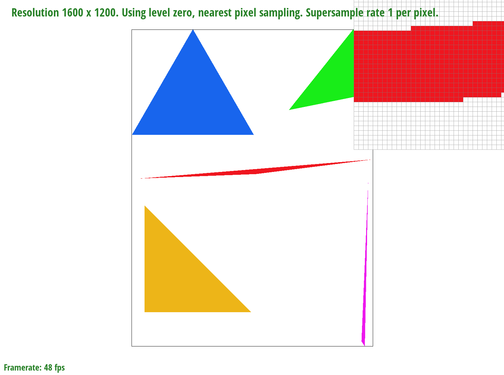
|
For extra credit, there are some optimizations that I used:
- Bounding Box Precomputation: The bounding box is computed once before the loops to avoid redundant calculations for each pixel or sample.
- Loop Optimizations: The loops iterate through the bounding box of the triangle's coordinates (x, y). Instead of recalculating the bounding box within the loop for every pixel, it is calculated once at the start of the function. This saves redundant arithmetic work.
- Triangle Winding Check: The barycentric coordinates are calculated once per sample, and the condition checks if the sample is inside the triangle, avoiding redundant checks.
Task 2: Antialiasing by Supersampling
Supersampling is useful because it helps to reduce aliasing, which manifests as jagged or pixelated edges, especially along the borders of shapes like triangles. By rendering a scene at a higher resolution than the display resolution and then averaging the results, supersampling captures more detail at subpixel levels, resulting in smoother transitions between pixels. This technique produces cleaner and more realistic images, particularly in areas with high contrast or sharp edges, by providing a more accurate representation of the scene.
In the process of implementing supersampling, several modifications were made to the rasterization pipeline. The most significant change was the introduction of a sample_buffer, which stores multiple color samples for each pixel based on the sample_rate. This allows each pixel to store multiple subpixel values, enabling finer detail. The fill_pixel function was also updated to accommodate these multiple samples, storing a color for each subpixel. During triangle rasterization, the algorithm was modified to iterate over subpixels within each pixel, checking whether each subpixel lies inside the triangle using barycentric coordinates. Finally, the resolve_to_framebuffer function was updated to average the samples within each pixel, producing a smooth final color for the pixel.
By using supersampling, the triangles are antialiased because each pixel now represents multiple subpixels, allowing the algorithm to capture more information and produce smoother edges. This approach minimizes jagged edges and results in a higher-quality image by averaging the samples, creating a more refined and anti-aliased representation of the triangle.
|
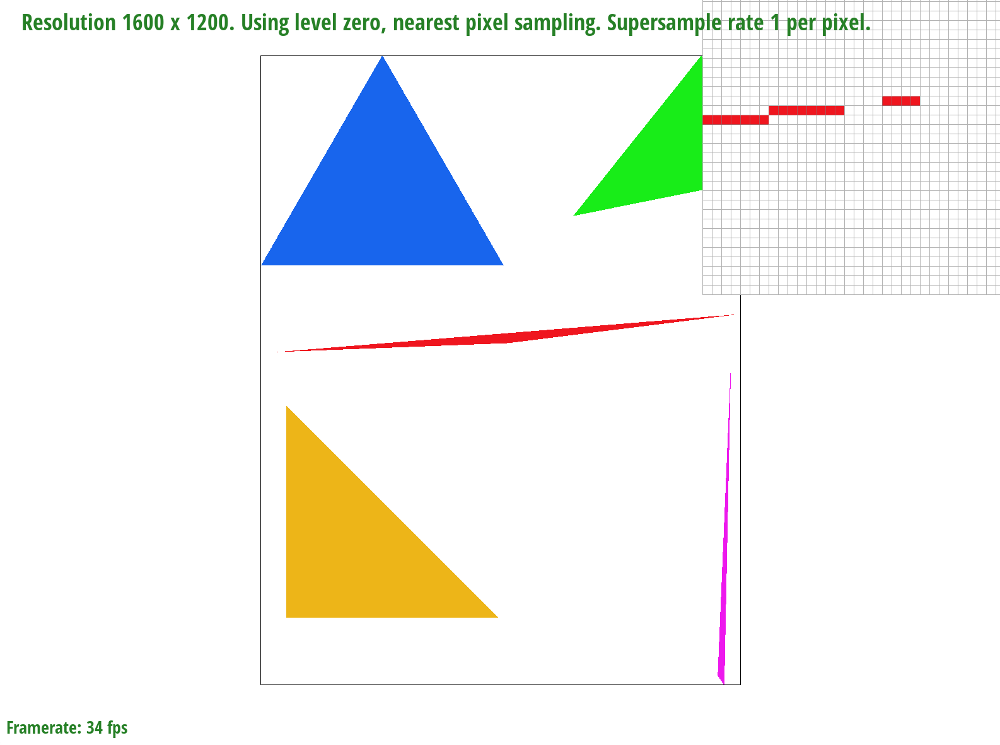
|
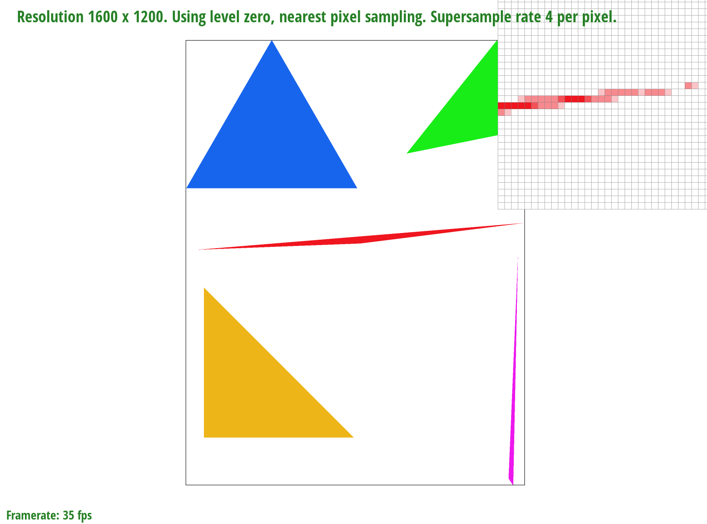
|
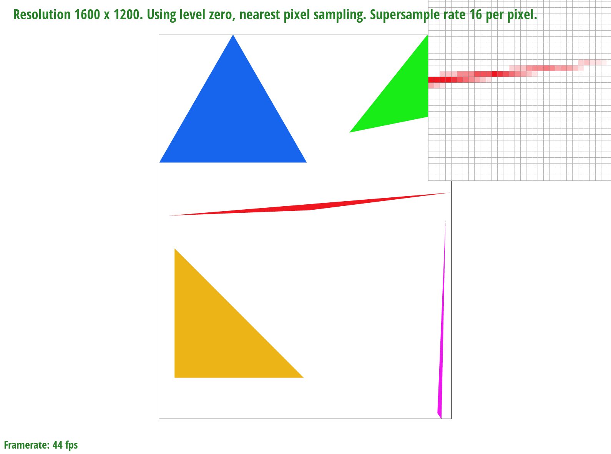
|
The differences in results between sample rates of 1, 4, and 16 are due to how many points within each pixel are sampled to determine its color. At a sample rate of 1, only one point is sampled, leading to jagged, pixelated edges due to limited data. With a rate of 4, more samples help smooth out some of the jaggedness, but sharp edges, like a triangle’s corner, still appear rough. At 16 samples, the renderer captures much more detail, significantly reducing aliasing and smoothing out edges, particularly on fine details like corners, creating a much cleaner and more natural image.
Task 3: Transforms
|
|
For extra credit, I made it so that the image rotate using 'A' and 'D' keys. To implement the rotate_view function, I modified the SVG to NDC matrix stack by applying a rotation transformation. The steps are: create a rotation matrix using the specified angle, multiply the current SVG to NDC matrix by the rotation matrix, call the redraw function to update the display.
| 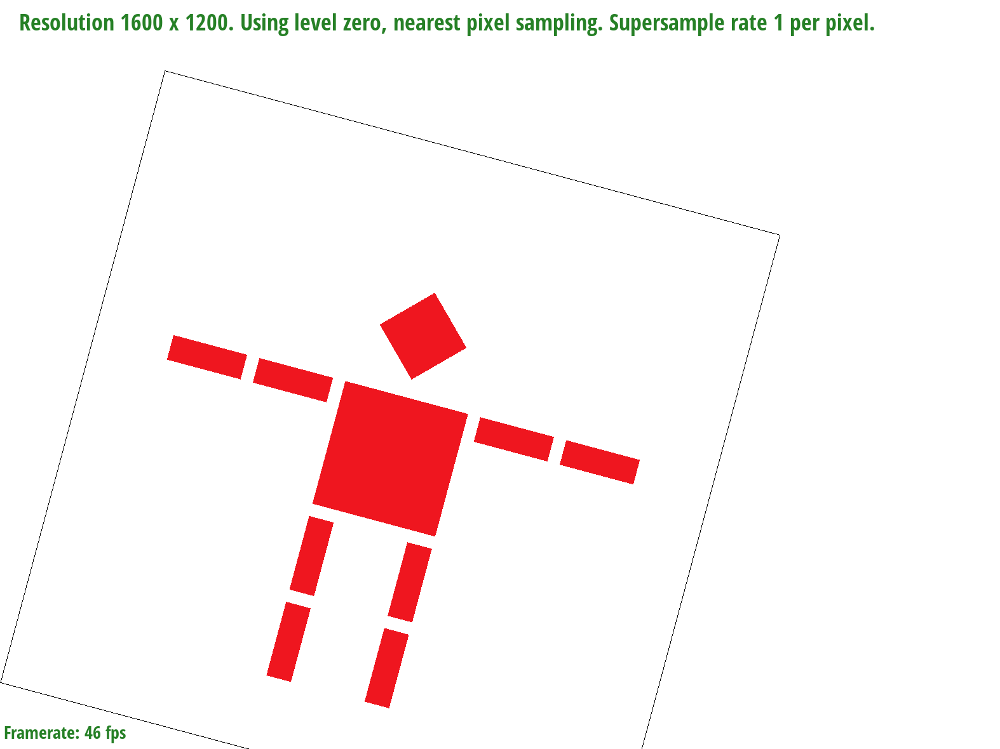 |
Task 4: Barycentric coordinates
Barycentric coordinates are a set of three weights (α, β, γ) used to describe a point P inside a triangle, which would be P = αA + βB + γC, where A, B, C are vertices and α + β + γ = 1. These coordinates are important in graphics for determining if points lie inside triangles and for interpolating properties like colors and textures. For example, (1/3, 1/3, 1/3) represents the triangle's center.
Barycentric coordinates can be calculated using the areas of sub-triangles. For a point P, α is the ratio of the area of the triangle formed by P, B, and C to the area of the entire triangle ABC. Similarly, β and γ are calculated using the areas of triangles P, A, C and P, A, B, respectively. This method ensures that the coordinates are normalized and sum to 1.
Barycentric coordinates are also used to interpolate vertex attributes such as color, texture coordinates, and normals. For example, if the vertices of a triangle have different colors, the color at any point inside the triangle can be computed as a weighted average of the vertex colors using the barycentric coordinates.
|
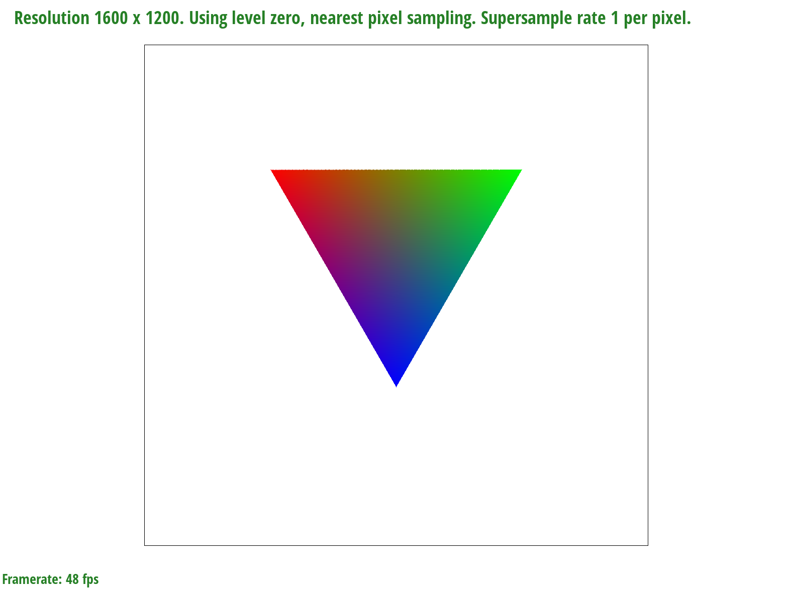
|
|
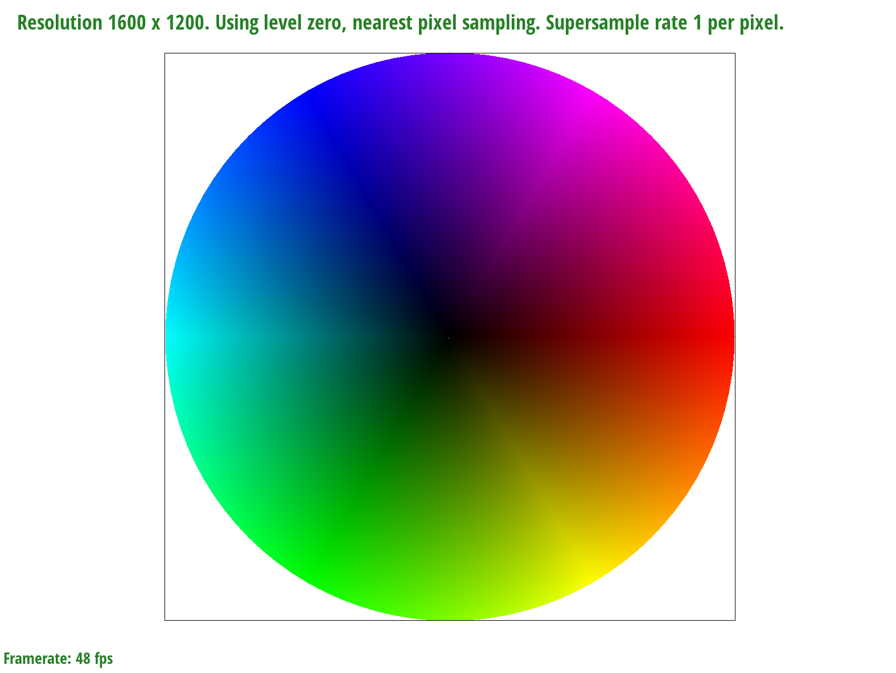
|
Task 5: "Pixel sampling" for texture mapping
Pixel sampling is the process of selecting colors from a texture image based on UV coordinates, which may not align perfectly with pixel boundaries. In my implementation, I first determine the bounding box of the triangle by finding the min and max x and y values of its vertices. To improve accuracy, I use supersampling, dividing each pixel into multiple subpixels based on the square root of the sample rate. For each subpixel, I perform a point-in-triangle test using barycentric coordinates to determine if it lies inside the triangle. If it does, I interpolate the UV coordinates and use either nearest-neighbor or bilinear interpolation to fetch the corresponding texture color. Finally, I store the sampled color in a buffer for later processing.
Nearest selects the color of the closest pixel to the UV coordinates by converting the UV to pixel coordinates and rounding down.
Bilinear interpolates between four neighboring pixels. It first computes the colors in the x-direction and then interpolates those results in the y-direction to get a smoother result.
| Nearest | Bilinear | |
| 1 sample | 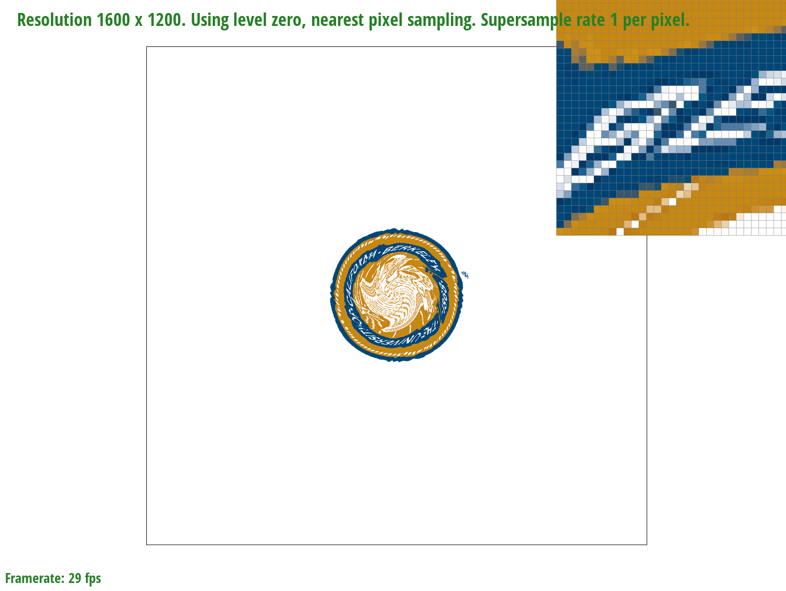 | 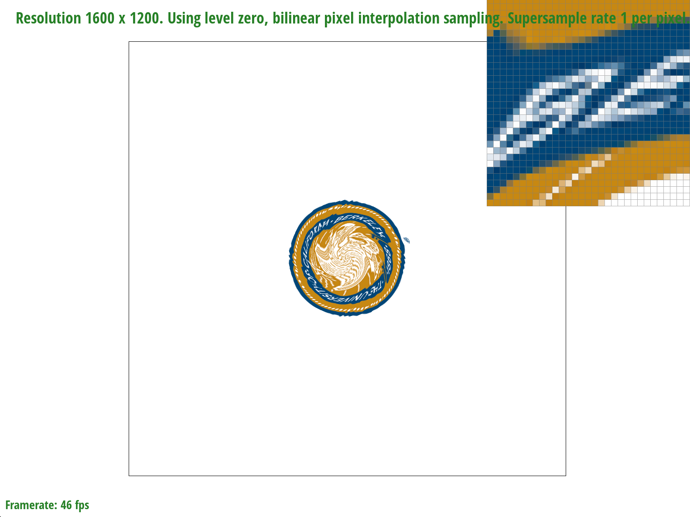 |
| 16 samples | 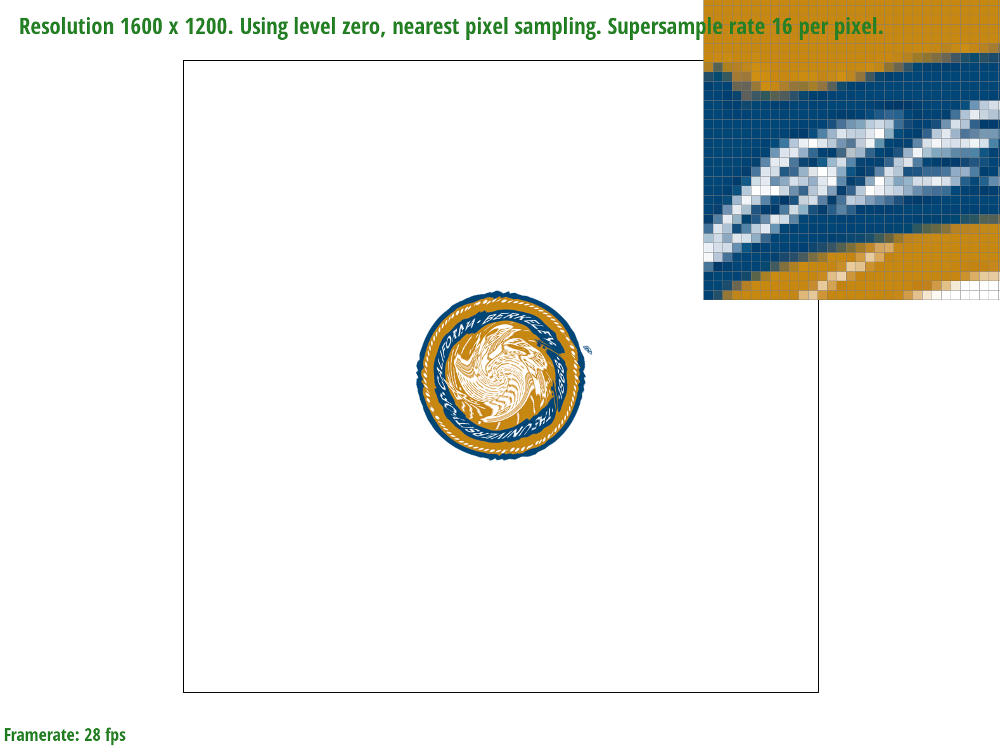 | 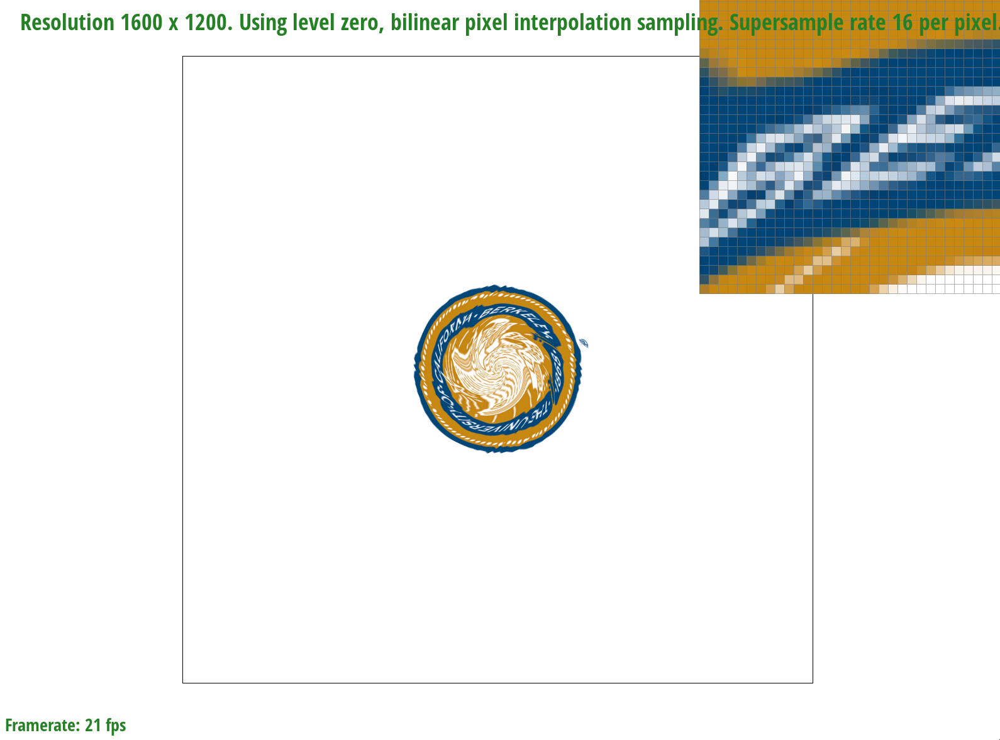 |
Nearest neighbor produces blocky textures, especially from a distance or with low-resolution textures, while bilinear interpolation offers smoother transitions. The difference is most noticeable at lower resolutions or when textures are scaled. Bilinear is slower but improves visual quality, while nearest-neighbor is faster.
Task 6: "Level Sampling" with mipmaps for texture mapping
Level sampling determines the appropriate mipmap level for texture mapping by measuring how much texture coordinates change across the screen. It prevents aliasing and blurriness by selecting the right level of detail. The level is computed using the maximum rate of change of texture coordinates:
\[ LOD = \log_2(\max(L_x, L_y))\]
where \(L_x = \sqrt{(du/dx)^2 + (dv/dx)^2}\) and \(L_y = \sqrt{(du/dy)^2 + (dv/dy)^2}\).
In my implementation of level sampling for texture mapping, I first calculate the barycentric coordinates to determine where in the triangle the current sample point lies. Using these coordinates, I interpolate the base texture coordinates (u,v) at that point. To properly handle level sampling, I calculate texture coordinate differentials by sampling one pixel over in both x and y directions. This involves computing new barycentric coordinates at (x+1,y) and (x,y+1), then using these to find how the texture coordinates change in each direction. These differentials tell us how much the texture is being stretched or compressed in screen space. I package all this information - the base texture coordinates and their rates of change - into a SampleParams struct, which includes the UV coordinates and their differentials, along with the specified level sampling method. This struct is then passed to the texture sampling function, which uses the differentials to determine the appropriate mipmap level for sampling the texture.
Mipmaps are precomputed, downscaled versions of a texture, each level being half the resolution of the previous one. They are stored in memory and used to improve rendering performance and quality. For example, when a texture is viewed from a distance, a lower-resolution mipmap level is used to avoid aliasing and reduce memory bandwidth usage.
Pixel Sampling:- Speed: Fast, as it only samples one value per pixel.
- Memory Usage: Low, since it only stores the texture and doesn’t require extra data.
- Antialiasing: Can result in aliasing if textures are stretched or shrunk, as it doesn't account for mipmap levels.
- Speed: Slower than pixel sampling due to calculations for selecting the right mipmap level per pixel.
- Memory Usage: Moderate, as it requires multiple levels of the texture.
- Antialiasing: Better at preventing aliasing and blurriness, as it adjusts texture detail based on distance.
- Speed: Slower, as it requires multiple samples per pixel and additional computation for averaging.
- Memory Usage: Higher, since it stores multiple samples per pixel.
- Antialiasing: Best for antialiasing, as it smooths out jagged edges by averaging samples.
| P_NEAREST | P_LINEAR | |
| L_ZERO | 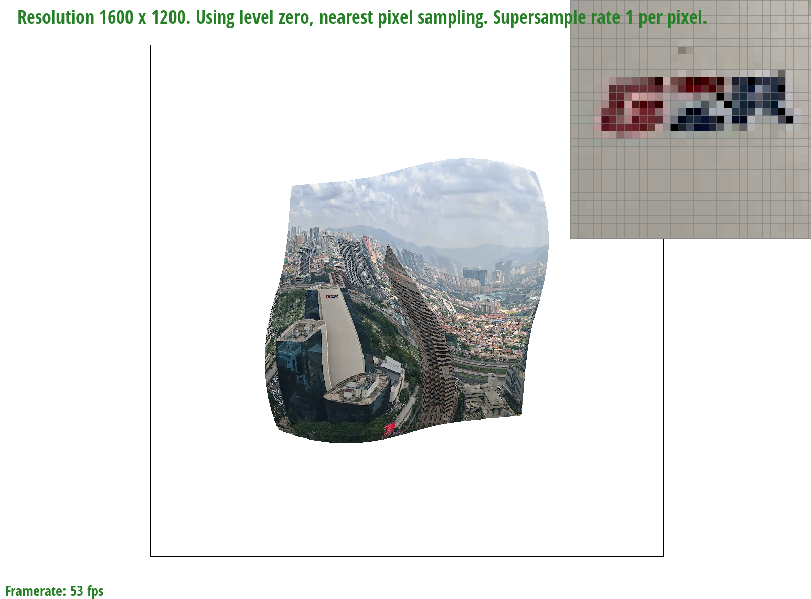 |

|
| L_NEAREST | 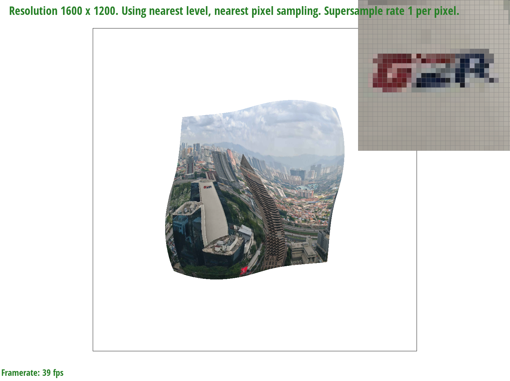 | 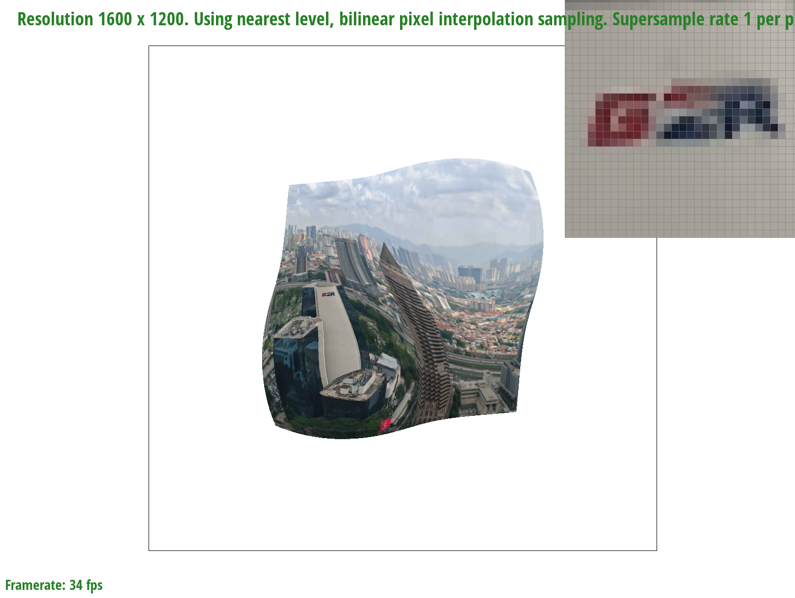 |